Journal of the Hardy Orchid Society
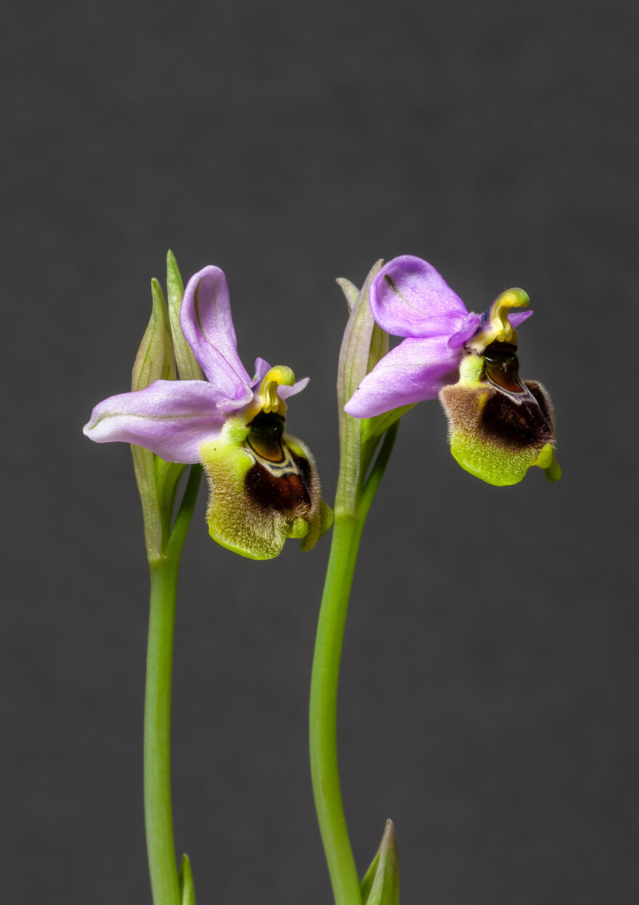
Our aim is to promote interest in the study of Native European Orchids and those from similar temperate climates throughout the world. We cover such varied aspects as field study, cultivation and propagation, photography, taxonomy and systematics, and practical conservation. We welcome articles relating to any of these subjects. Views expressed in journal articles are those of their author(s) and may not reflect those of HOS.
Contents
- Editorial Note by Mike Gasson
- Chair’s Note by Celia Wright
- Field Trips 2024
- Results of HOS Plant Show 2024
- Rewilding and Other Modes of Ecological Restoration by Richard Bateman
- Orchid Meadows and Rewilding by Bill Temple
- Puzzling Platantheras by Richard Mielcarek
- Monkton Nature Reserve: Reflections on a Former Rubbish Tip by James Douglas Bonthron
Editorial Note
Details of the 2024 field trip programme and results from the recent Plant Show are included in this JHOS. Articles include a discussion of unusual versions of Platanthera species and a profile of Monkton Nature Reserve with a first report on their rabbit deterrent research; something supported by one of the first HOSCG grants.
A major part of this issue is the inclusion of articles from Richard Bateman and Bill Temple on the growing interest in creating and maintaining orchid meadows and how this relates to ‘rewilding’. The profile of the latter is also growing but its original or modified definitions would not embrace a focus on single species or a group of related species as envisaged by orchid enthusiasts. Rewilding as a term has massively drifted in meaning but its core drivers to let nature take control and minimise human intervention are at odds with the introduction and protection of orchids. Hopefully these articles from Richard and Bill will provide a useful perspective.
Chair’s Note
Welcome to a new year of HOS activities following the AGM at Kidlington two weeks ago. A special welcome to Colin Rainbow who returns to the role of HOS Treasurer following Christopher Snelson’s decision to stand down. Christopher will support Colin with some involvement until the necessary changes in banking arrangements are complete. The updated Constitution was passed by an overwhelming majority. Thank you to all who voted in favour of it, either at the meeting or by email.
Talks at the meeting were varied and interesting as usual. A special thank you to our President, Richard Bateman, who stood in at the last moment with a fascinating talk entitled “One Frog or Two?” when David Pearce was unable to travel to Kidlington. We will welcome David instead to the Autumn meeting to tell us about his experiences during “16 years with the Butterfly Orchid”.
Thanks to Richard Kulczycki – with help from Charlie Philpotts in the north of England – we have more Field Trips this year than ever before. We know that these trips are a major reason why many of our members join HOS. The Forum also plays an important role from this month onwards as members help each other with details of the location of wild orchid populations and flowering times in the current season.
For many years now, June has brought the Malvern Orchid Show with many orchid society stands, including the one that I have managed for HOS. This year will be different as circumstances at the Three Counties Showground have resulted in a change of location to the NEC in Birmingham as part of Gardeners’ World Live. We expect this to bring many more visitors to the Orchid Show than we had at Malvern and hope to be able to recruit more new HOS members as a result. There will be orchids for sale as well as displays. Reduced price tickets to Gardeners’ World Live are available through orchid societies. Iain Wright (who manages this for HOS) posted the details of how to obtain these on the Forum on 28th March, so do take advantage of the offer if you can.
As well as the role of HOS Chair, I also manage the speaker programmes for our three meetings each year. This must be done well in advance as the booking forms with the programmes are sent out with the previous Journal. I’m always looking for members or others with orchid knowledge or experience who are willing to speak. Can you help with this? If so, please get in touch. I wish you all a happy summer with hardy orchids, whether at home, across the UK or overseas and look forward to seeing many of you, whether at a meeting, on a field trip or maybe unexpectedly in a field of orchids.
Field Trips 2024
You must make your decision whether you are fit and healthy enough to participate in any particular walk. General indications of difficulty are given, but on the day weather and underfoot conditions may make the trip more difficult. You should prepare as for a remote country walk and expect uneven ground. The general principle is: participants are responsible for their own safety. Prepare as if you were going hill walking with friends. Do communicate any concerns you have to the leader and your fellow participants as early as possible on the day or, better still, beforehand. The leader does not carry any first-aid or emergency equipment. The leader’s role is to help you find your way around the area and help you to see more orchids than you would if you went on your own. It is not to ensure your safety – you are solely responsible for that. Areas visited often have no mobile signal.
We normally collect a voluntary donation to any non-government organisation, such as a Wildlife Trust, that maintains a site visited. Every year recently we have collected several hundred pounds for conservation – thank you. Our insurance only covers our own members, so it is not normally possible to take a non-member friend with you. Family membership can include children too. You cannot bring a dog unless the trip leader explicitly agrees to this. With this number of trips, some trips will have to be rescheduled, or perhaps even cancelled, if the orchids do not flower or are affected by the season. Please be sympathetic.
To register on a trip, please email the individual contact given and include your membership number (or perhaps a small apology if you have lost it!). Any enquiries, ideas, problems, queries, please write to one of the Field Trip Co-ordinators – fieldtrips@hardyorchidsociety.org.
Selected trips
- Saturday 16th March: Oxfordshire, near Didcot – Leader: Hamza Nobes
To see the Giant Orchids (Himantoglossum robertianum) discovered two years ago. One or two orchids should be near the path but most are a few metres down a very steep and slippery grass bank. Stiff soled shoes are preferable and the short descent requires extreme care. - Saturday 11th May: Thames Valley, Oxfordshire – Leader: Keith Boseley
To see the Lady and Monkey Orchids at Hartslock, plus the famous hybrids. Meet by Goring Station and walk a mile to the reserve (and back). - Thursday 16th May: East Chilterns, South Beds – Leader: Alec Latham
Three miles connecting the Hoo Bit, the Pegsdon Hills and Knocking Hoe reserves. White Helleborine, Fly Orchid and Burnt Orchid expected. Sturdy footwear required. - Tuesday 28th May: East Kent – Leader: Colin Sillence
Parkgate and Denge Wood to see Monkey Orchid, Lady Orchid, Fly Orchid and Greater Butterfly-orchids. Up to twelve orchid species possible. Car sharing required. - Wednesday 5th June: East Kent – Leader: Colin Sillence
Monkton Nature Reserve – the first ever recipient of our conservation grant. Nine orchids should be in flower with impressive numbers of Man Orchid. Afternoon visit to Sandwich for Lizard Orchid. - Friday 7th June: Braunton Burrows, North Devon – Leader: Roger Harding
Guided by legendary local botanist Mary Breeds on one of the finest sand dune systems in the country. Early and Southern Marsh-orchids, Bee Orchid, Pyramidal Orchid, Twayblade and more. - Sunday 23rd June: Kenfig Dunes, Glamorgan – Leader: Steve Parsons
Primary focus on the Fen Orchid, plus high-summer and late-summer species. - Sunday 23rd June: near Leeds – Leader: Charlie Philpotts
Three varied sites. Northern and Southern Marsh-orchids, Common Spotted-orchid, Twayblade, Bee Orchid and hybrids. - Saturday 29th June: Cloud Wood, Leicestershire – Leader: Neil Hubbard
SSSI and the best Leicestershire & Rutland Wildlife Trust reserve for orchids. Common Spotted-orchid, Bee Orchid, Twayblade, Pyramidal Orchid, Greater Butterfly-orchid and more. - Sunday 30th June: Perthshire – Leader: Dave Trudgill
Visit to Dave Trudgill’s orchid meadow with both Butterfly-orchids, Marsh-orchids, Helleborines and many others. - Tuesday 9th July: Cliburn Moss, Penrith, Cumbria – Leader: Alan Gendle
For Creeping Lady’s-tresses. Annual count. Wellies or waterproof walking boots essential. - Sunday 14th July: Kirkby Stephen, Cumbria – Leader: Charlie Philpotts
Waitby Greenriggs and Augill pasture. Northern Marsh-orchid, Common and Heath Spotted-orchids, Greater and Lesser Butterfly-orchid, Marsh Helleborine, Twayblade, Frog Orchid and three Fragrant-orchids. - Sunday 28th July (afternoon): South of Newbury, North Hampshire – Leader: Simon Melville
A trip for helleborines. Epipactis helleborine, E. helleborine var. chlorantha, E. purpurata, E. × schultzei and E. phyllanthes (var. pendula) all possible.
Results of HOS Plant Show 2024
The Plant Show was judged by Nick Fry. Photography of the winning plants by Jon Evans.
| Class | Result |
|---|---|
| Class 2: Three pots native European (not native to Britain) orchids, distinct varieties | 1st Neil Hubbard: Ophrys lutea, O. tenthredinifera, O. fusca 2nd Moira Tarrant: Ophrys oestrifera, O. mammosa, O. fusca var. calocaerina |
| Class 4: Three pots hardy orchids, distinct varieties, any country of origin | 1st Moira Tarrant: Ophrys bombyliflora, O. lutea var. melena, O. tenthredinifera |
| Class 5: One pot native British orchid | 1st Neil Hubbard: Anacamptis morio 2nd Neil Hubbard: Orchis anthropophora |
| Class 7: One pot non-European orchid | 1st Mike Powell: Pterostylis curta 2nd Moira Tarrant: Pterostylis ‘Dusky Duke’ 3rd Mike Powell: Cymbidium cyperifolium |
| Class 8: One pot Dactylorhiza | 1st Neil Hubbard: Dactylorhiza romana |
| Class 9: One pot Orchis, Anacamptis or Neotinea | 1st Moira Tarrant: Orchis italica 2nd Neil Evans: Neotinea lactea 3rd Neil Hubbard: Orchis anthropophora |
| Class 10: One pot Ophrys | 1st Neil Hubbard: Ophrys speculum |
| Class 16: One plant or pan of plants raised from seed by the grower | 1st Moira Tarrant: Ophrys lutea |
Winner of Best in Show Trophy: Moira Tarrant for Orchis italica in Class 9
Chairman’s Award: Neil Hubbard for Orchis anthropophora
Grower’s Trophy: Moira Tarrant for Ophrys lutea in Class 16
Banksian Medal: Moira Tarrant
Some of the winning entries are featured below. Numbers match the Class entered and the position (e.g. 2-1 is the first placed entry in Class 2). Photography by Jon Evans.
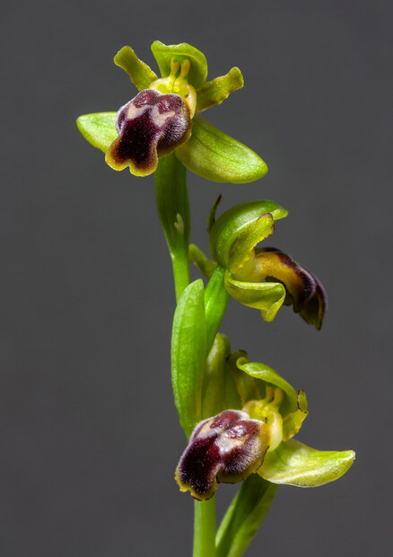
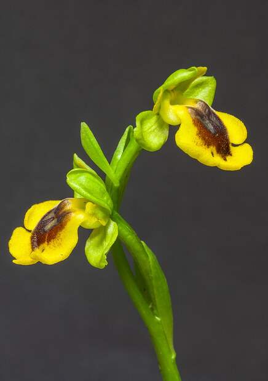
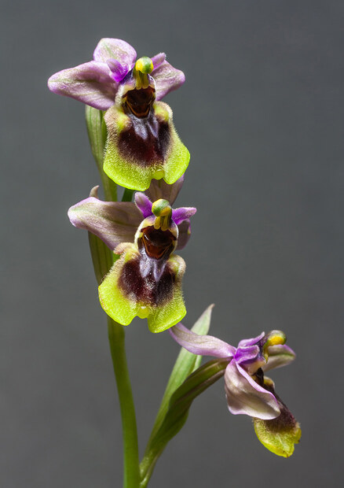
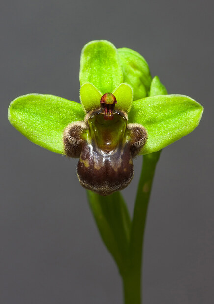
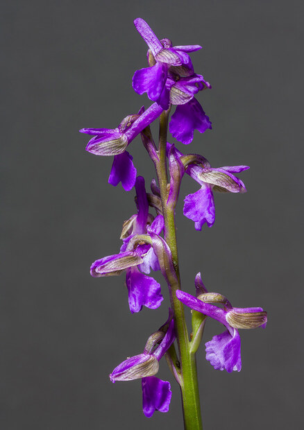
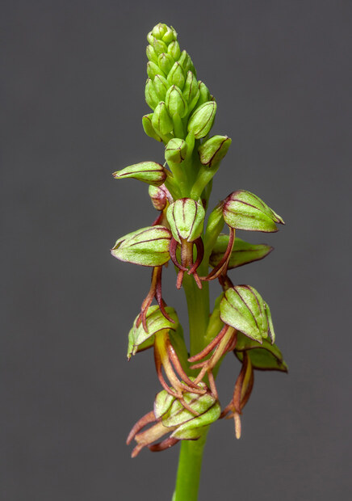
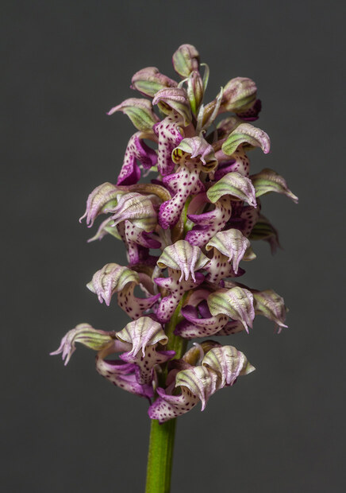
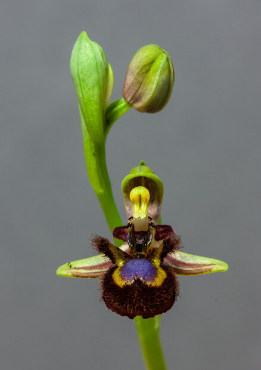
Rewilding and Other Modes of Ecological Restoration, as Viewed From the Perspective of a Hardy Orchid
Many countries, including the UK, have recently experienced an upsurge of interest in various aspects of ecological restoration. This enthusiasm is epitomised by Target 2 of the Global Biodiversity Framework, which commits to ensuring that 30% of degraded habitats will be under effective restoration by 2030. This is no mean task – for example, the excellent recent report by State of Nature (Burns et al. 2023) notes that only 25% of the UK’s peatlands and a startlingly low 7% of woodlands are formally categorised as being in “good condition.” If our more modest community of orchid enthusiasts is also to address this challenge, we need to begin by identifying realistic goals, and deciding what kind and scale of projects are needed to achieve them. In particular, we should determine exactly which roles hardy orchids are best qualified to play in restoration, and distinguish them from roles that orchids are, by their very nature, obliged to leave to other, better suited groups of plants.
What is restoration ecology?
Ecological restoration is an umbrella term that covers a multitude of sins. It is defined by Wikipedia as “the practice of renewing and restoring degraded, damaged, or destroyed ecosystems and habitats in the environment by active human interruption and action”. For the Society for Ecological Restoration it is “an intentional activity that initiates or accelerates the recovery of an ecosystem with respect to its health, integrity and sustainability”, ecosystems being “dynamic communities of plants, animals, and microorganisms interacting with their physical environment as a functional unit.”
Missing from these definitions, but nonetheless implicit in most texts addressing restoration, is the idea that the aspects of degradation, damage and/or destruction in question are the result of mankind’s activities, rather than being a purely natural phenomenon. Also missing from these definitions, but this time deliberately, is a sense of scale – both the scale of the damage already done and the scale of the area of landscape that has been affected are relevant.
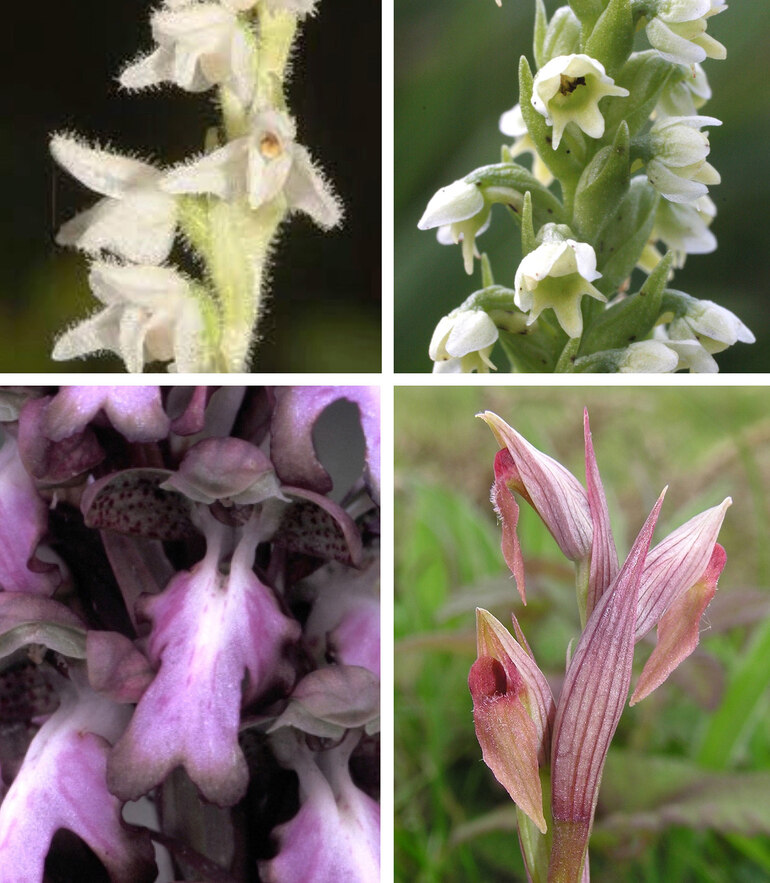
The first three principles of rewilding focus on “trophic interactions” (crudely, who eats who), “landscape-scale [spatial] connectivity” and “recovery of ecological processes.” But orchids constitute only a tiny proportion of the biomass in any habitat in which they occur, reliably failing the criterion for ecological dominance. The one arguable exception where orchids constitute a significant percentage of the ground flora – the presence of Birds-nest Orchid and some Helleborines in densely shading woodlands – simply reflects the absence of most other flowering plants, which lack the orchid’s ability to use mycorrhizal networks to plumb into surrounding trees as a convenient source of nutrients. Across all habitats, orchids are too uncommon to aid long-distance connectivity among non-orchid species, and have no involvement in ecological processes that are likely to dictate the overall nature of the local vegetation.
Plant species restoration projects are probably best epitomised by orchids, most notably several decades of (rather accident-prone) attempts to bulk up the representation in northern England of the formerly far more widespread Lady’s-slipper Orchid. Rather than emphasising reintroductions, British and Irish conservationists remain focused on trying to prevent further losses among our ca 1390 unequivocally native plant species. The one officially recognised loss of a native orchid – Summer Ladies-tresses, eliminated from the New Forest by 1953 – is generally attributed not to indirect human effects on the relevant habitat but instead to the direct impact of the vast numbers of plants collected for herbaria.
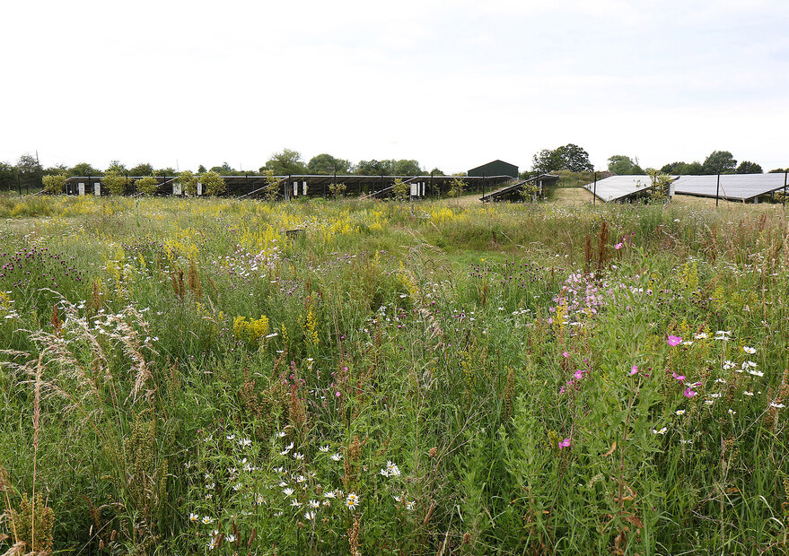
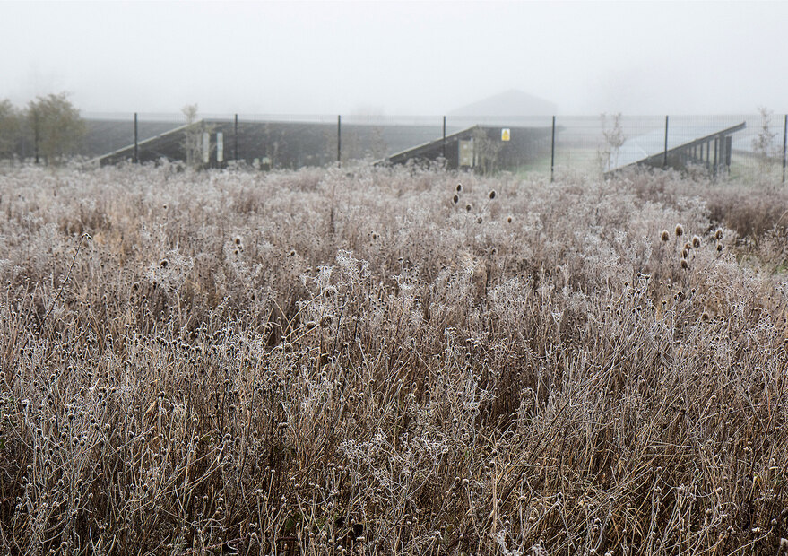
Orchid Meadows and Rewilding
Bill Temple discusses the practical creation and management of orchid meadows and how these activities relate (or conflict) with contemporary rewilding concepts. The article draws on conservation experience and the Society’s own grant-supported work, including observations from wildlife areas in summer and winter.
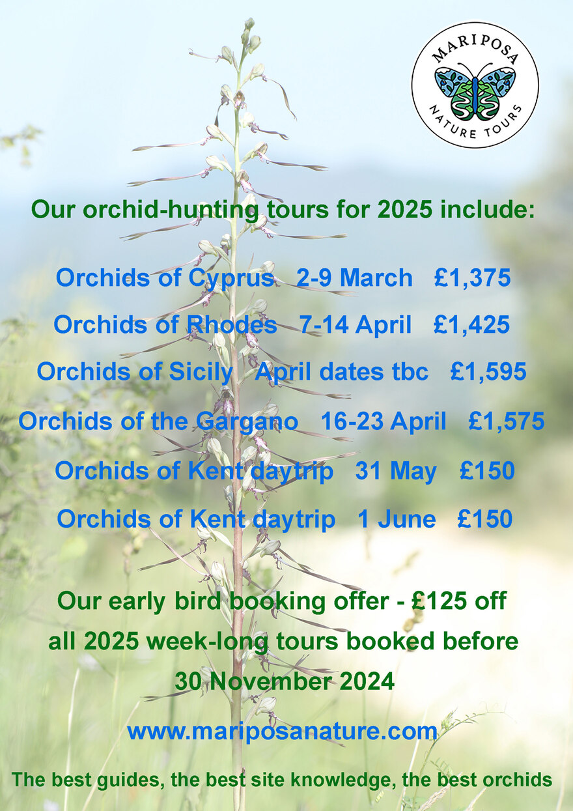
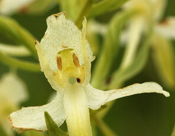
Puzzling Platantheras
UK field guides all agree that the best way to distinguish between the two species of Platanthera that occur here is to examine the pollinia; ‘close together and vertically parallel’ in Platanthera bifolia, Lesser Butterfly-orchid, and ‘relatively far apart and diverge sharply from the top downwards’ in Platanthera chlorantha, Greater Butterfly-orchid, according to Ettlinger. Harrap & Harrap (2005) and Cole & Waller (2020) provide illustrations showing obvious differences in the pollinia.
Stace says the parallel pollinia of P. bifolia are 0.3–1.2 mm apart while the base of angled pollinia in P. chlorantha are 2.5–4.8 mm apart. These differences mean the mouth of the spur is obvious in P. chlorantha but largely obscured in P. bifolia. Swainbank (2017) suggests, based on a limited study, that the subtended angle between the pollinia averages 45° in P. chlorantha but no more than 5° in P. bifolia. However, later observations reduced the angle for P. chlorantha to somewhere between 38° and 32°.
So identification and separation should be straightforward, but it is not always so simple in the field. This is particularly true in the Stroud area of the Cotswolds where it is not hard to find plants whose pollinia do not easily fit either species.
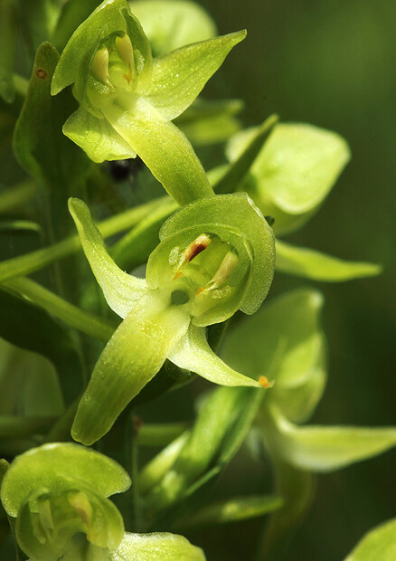
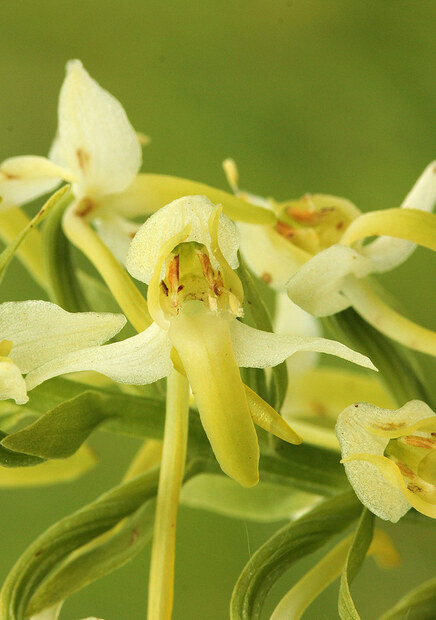
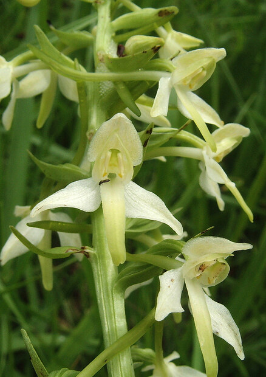
Monkton Nature Reserve: Reflections on a Former Rubbish Tip
A profile of Monkton Nature Reserve (a former rubbish tip) and a first report on rabbit-deterrent research supported by one of the early Hardy Orchid Society Conservation Grants (HOSCG). The reserve has become an important orchid site and was the first recipient of an HOS conservation grant. Nine orchid species can be in flower, with impressive numbers of Man Orchid.
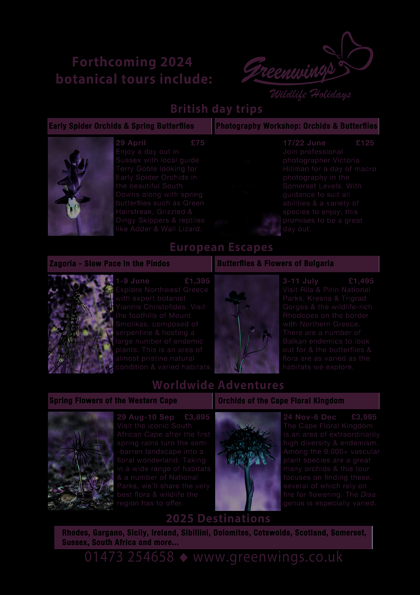
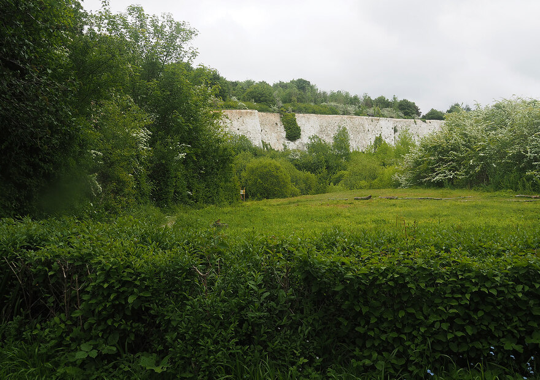
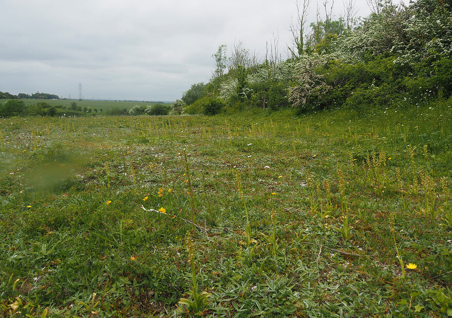
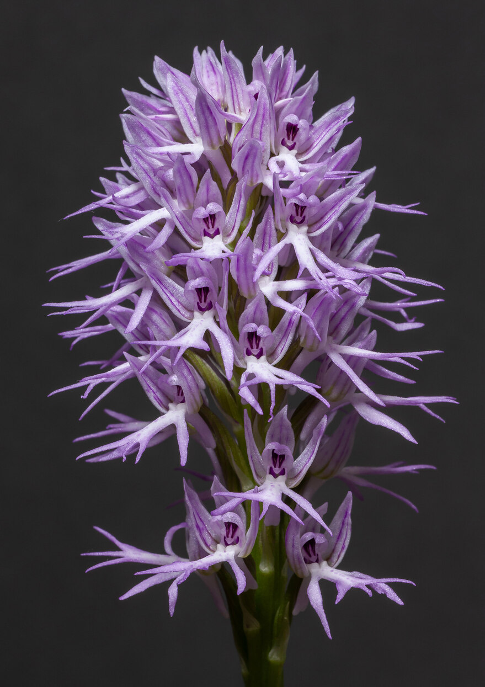
This is a readable conversion of JHOS Vol. 21 No. 2 (113) Spring 2024. The original PDF remains the definitive designed version for print.